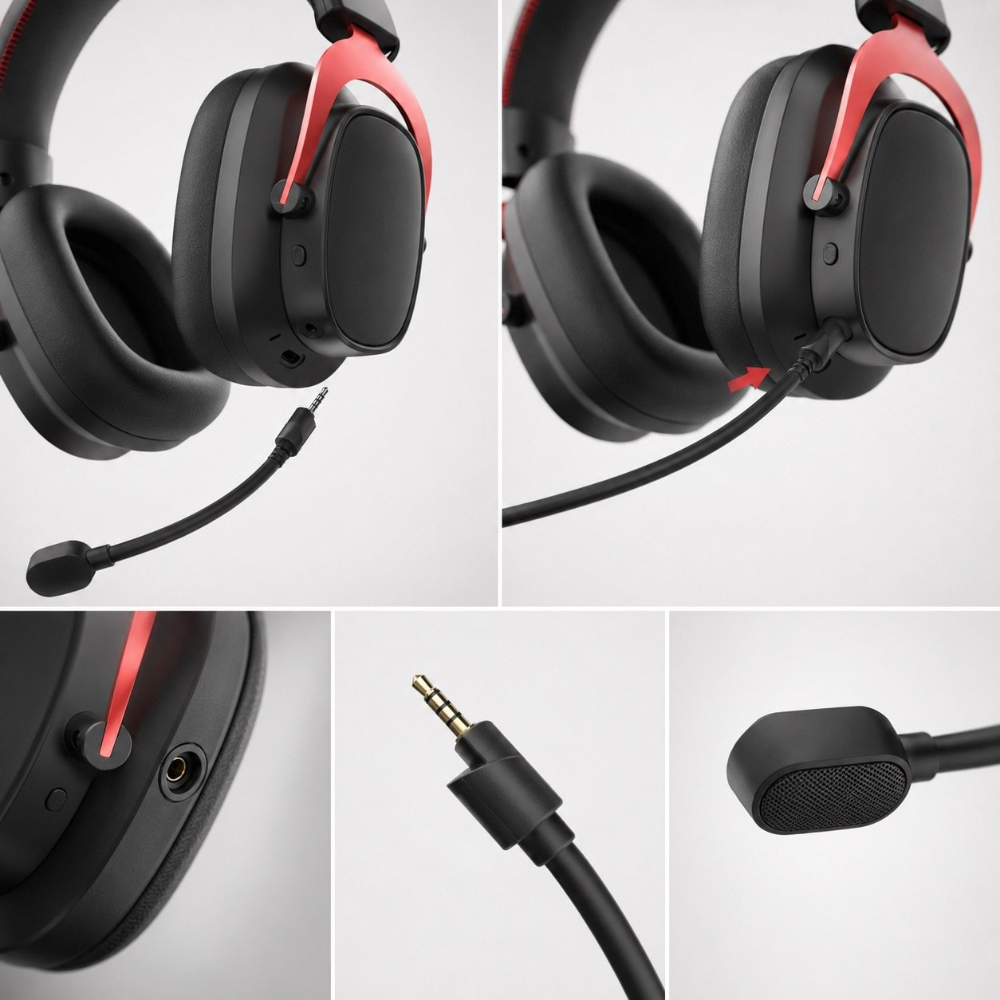
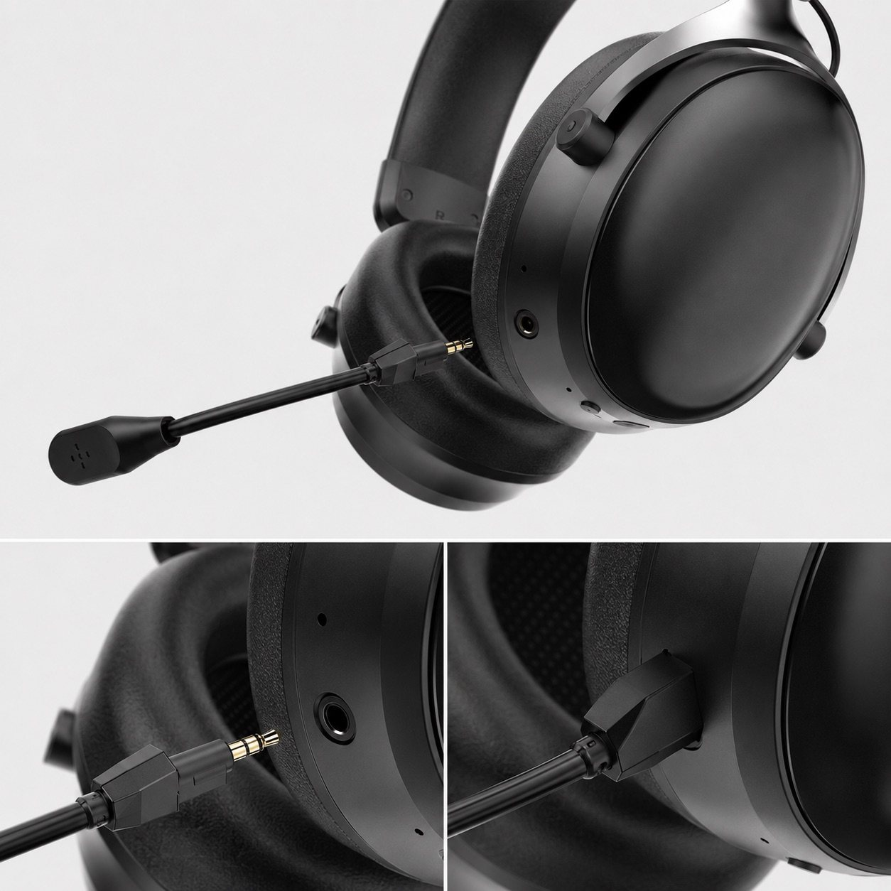
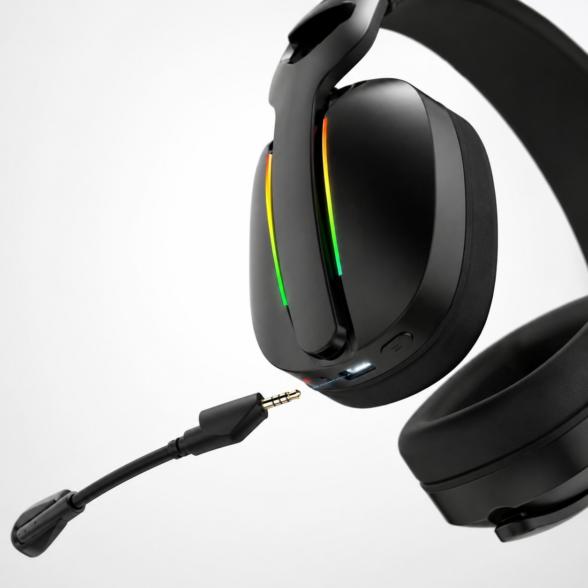
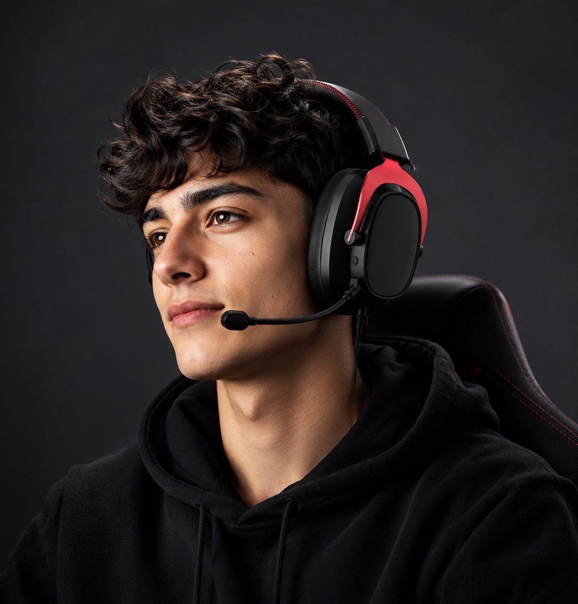

G941 detachable boom
Check plug direction and boom adjustment on the sample.

Microphone quality guide
Can teammates hear your voice, or mostly your keyboard? Record the same passage in a quiet room, while typing and with a fan running. Compare speech clarity before judging how much noise disappears.
Use the script and blank recording sheet below. This is a sample-comparison method, not a published result for a TALRIVO model.

Quick test
Read this passage at your normal speaking pace. About 20 seconds is a guide, not a pass or fail limit.
Can you hear me clearly while I play? I am checking this headset at my desk. Please listen for the beginning and end of each word. Now I am speaking a little more softly, then returning to my normal voice.
Keep the speaker, boom position, device, app, input level and processing settings consistent. Record the model version and connection mode. If you change a setting, label the new take.
Keep original clips without music or edits that hide a dropout. This is a proposed listening comparison, not a laboratory measurement or a completed test report. Mark missing checks "Not tested".
Share the blank sheet with your buying team and cite the TALRIVO headset mic comparison script. Keep your recordings and results separate from the proposed method.
Troubleshooting
Placement matters: Shure's headset microphone guide explains how position and direct breath affect pickup. Its examples are not TALRIVO specifications or test results.
Product evidence
These supplied images show structure and wearing position, not microphone or comfort test results.
Check plug direction and boom adjustment on the sample.

Check insertion, seating and handling.

Compare the detachable structure and control access.

Check boom reach and fit on real users.
Next checks
Separate noise reaching your ears from noise in your outgoing voice.
Check game audio and microphone input in each connection mode.
Match the microphone and accessories to the agreed packing list.
A first-party video reference, not a result for every sample or environment.
FAQ
Start with understandable speech: complete words, consistent volume and a natural voice. Then check keyboard and fan noise.
Use the same speaker, passage, device, app and settings. Record each sample in quiet, typing and fan conditions; identify the sample and connection in every clip.
Confirm the active microphone, boom position and input level. Change one setting at a time and record again before blaming the headset.
Record the settings your customers will use. Where available, make separate on/off recordings so app processing is not mistaken for headset performance.
No. Judge whether speech stays natural and understandable, not just how much background noise is removed.
No. It is a proposed listening comparison. Keep recordings, results and untested items for the exact sample version; it is not a laboratory report.
Send the model version, target device, connection mode and app settings with the original recording. Tell us what you hear and what needs to improve.